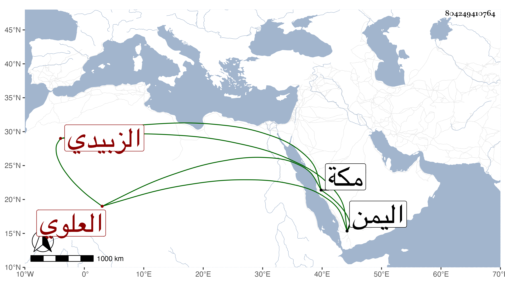

0902Sakhawi.DawLamic.ITO20230111-ara1.EIS1600.804249410764
Biography ID: 804249410764
أحمد بن عبد الله بن عبد الرحمن الشهاب العلوي الزبيدي أخو الشرف إسماعيل الوزير الآتي . قتله الظاهر صاحب اليمن وأخو الناصر لكونه رأى زوجة أخيه المذكور فأعجبه جمالها فأمره بطلاقها وضيق عليه حتى فعل وما وسعه بعد دخوله بها إلا الفرار إلى مكة رجاء إزالة قهره وألمه فلما بلغ الظاهر ذلك قتل أخاه ونهب بيوتهما وأزال نعمتهم وذلك في سنة ثلاث وثلاثين .
